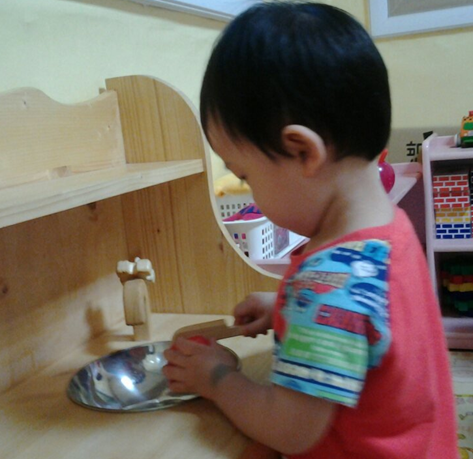

1. 식사습관 지도의 중요성
1) 영유아기는 성장과 발달이 가장 빠르다
영유아의 신체적, 발달은 인생에서 가장 빠르고 많이 이루어지면서 뇌발달을 촉진시킨다. 이 시기는 자기 자신의 생명 유지와 활동을 위해 0~12개월은 하루에 500~750kcal, 1~3세는 1,200kcal, 4~6세는 1,600kcal 정도가 소모된다(박성옥 외, 2003). 발달에 필요한 영양섭취는 식사 외에 간식도 필요하다. 간식은 식사에 영향을 미치지 않고 소화되기 쉬운 것으로 100~150kcal 정도의 열량을 제공하는 것이 적당하다.

2) 영유아는 음식을 골고루 섭취해야 한다.
식사습관은 신체적 건강 뿐만 아니라 정서적 만족감, 사회성 발달에도 영향을 미친다. 영유아기에 형성된 음식에 대한 선호, 식사습관 등은 일생 동안 지속된다. 특히 편식 및 식욕부진, 비만의 증가의 원인이 되므로 올바른 식사습관 지도는 중요한 문제로 인식되고 있다.
3) 식사습관 지도는 연계성 있도록 한다.
요즘 영유아들은 가정에서 지내는 시간보다 보육기관에서 또래들과 지내는 시간이 늘어나는 시기가 된다. 이 시점에서 식사습관 지도는 교사 뿐만 아니라 가정의 부모와 연계하여 일관성 있는 지도가 필요하다. 식사습관 지도는 개개인의 발달과 기질적인 특성 및 개인적인 소화력을 고려해야 하는 주의점도 있다. 부모와 교사는 음식에 대한 기초, 음식에 대한 기본적인 태도, 식사할 때의 예절에 도움을 줄 수 있도록 해야 할 것이다.
2. 식사습관 지도 내용
1) 식사 전 손을 씻고 감사의 마음을 표현한다.
2) 기쁘고 즐거운 마음으로 골고루 먹는다.
3) 천천히 꼭꼭 씹는다.
4) 음식은 적당량 먹는다.
5) 음식을 입에 넣고 이야기하지 않는다.
6) 돌아다니지 않고 식사한다.
7) 음식을 깨끗하게 먹는다.
8) 바른 자세로 앉아서 먹는다.
9) 되도록이면 다른 사람이 식사를 마칠 때까지 기다린다.
10) 식사 후 자기 자리 및 그릇은 스스로 정리한다.
11) 식사 후 반드시 이를 닦는다.
3. 식사습관 지도 시 유의사항
1) 소화력이 약한 시기이므로 소화가 잘 되는 방법으로 요리한다.
2) 음식의 모양, 크기 등에 대한 즐거움을 느낄 수 있도록 돕는다.
3) 발달 수준과 건강 및 기분 상태를 고려하여 융통성 있게 지도한다.
4) 편안한 분위기를 조성하여 즐겁게 먹도록 한다.
5) 음식을 먹지 않고 딴짓하는 경우는 강요하지 않고 그릇을 정리한다.
6) 음식 관련 동화, 시청각 자료, 견학 등으로 음식의 중요성을 이해시킨다.
7) 스스로 모방할 수 있도록 좋은 모델링을 제공한다.
8) 적절한 식사도구와 점진적인 음식 제공으로 음식을 친숙하게 한다.
영유아들의 식사 장소는 성인처럼 식탁이라는 한 곳으로 지정하기엔 답답하면서도 힘겨워하게 된다. 그래서 저는 '외식'을 권장한다. 외식이란 집 밖에서 라는 개념보다 식탁 외 장소에서 먹는 것이다. 이 시기는 식사가 즐겁고 행복한 식감놀이와 연계할 수 있도록 하기 위하여 식사 장소를 식탁 외 거실, 쇼파탁자, 베란다를 생각할 수 있다. 거실 바닥에 작은 밥상을 놓고 먹기, 또는 바닥에 보자기나 깔판매트 위에서 먹기, 쇼파탁자에서 간편하게 먹기, 베란다에서 깔판 놓고 먹기 등 다양하게 구상할 수 있다.
주의사항으로 식사 도중에 돌아다니지 않아야 하고, 다 먹은 후에는 자기 그릇을 씽크대에 갖다 놓도록 하면서 마무리를 해야 할 것이다. 마치 대변을 보고 마무리까지 스스로 하는 것처럼~. 아이가 어리다고 밥을 떠 먹이고 정리를 도와주면 어릴 때 형성해야 할 자립심과 자조능력이 약해진다. 또한 자기중심적인 사고가 강해져 '안먹어, 싫어' 등 식사에 대한 거부감과 편식이 증가되어 건강 약화 및 성격 형성에 부적강화가 될 것이며, 식습관 형성에 어려움이 증가하기 때문에 친근해지도록 적절한 조율이 필요하다.
출처: 권순황, 선애순,이형선(2015), 영아발달. 양서원
박순길, 김동례, 선애순 공저(2021), 영유아생활지도 및 상담. 공동체.
2023.06.16 - [상담] - 편식해요 - 먹기 싫어!, 좋아한 것만 먹고 싶어~
편식해요 - 먹기 싫어!, 좋아한 것만 먹고 싶어~
1. 편식 문제 행동 의의 및 특성 편식이란 한 가지 음식에 집착하거나 반대로 거부하는 현상을 의미한다. 아이의 편식하는 습관을 방치하면 불균형한 영양 상태로 건강상의 문제를 일으킬 수 있
think-sis.co.kr